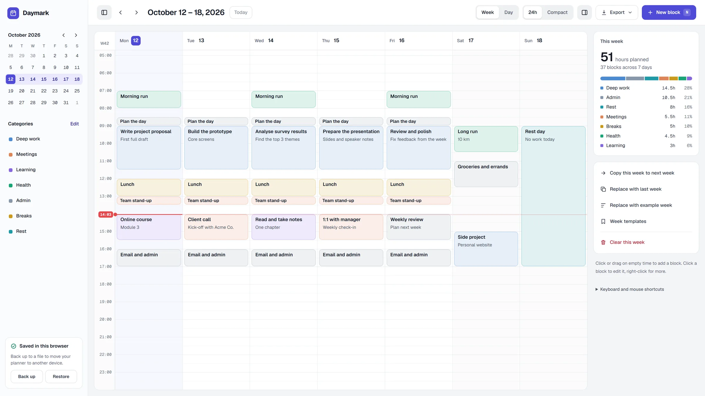
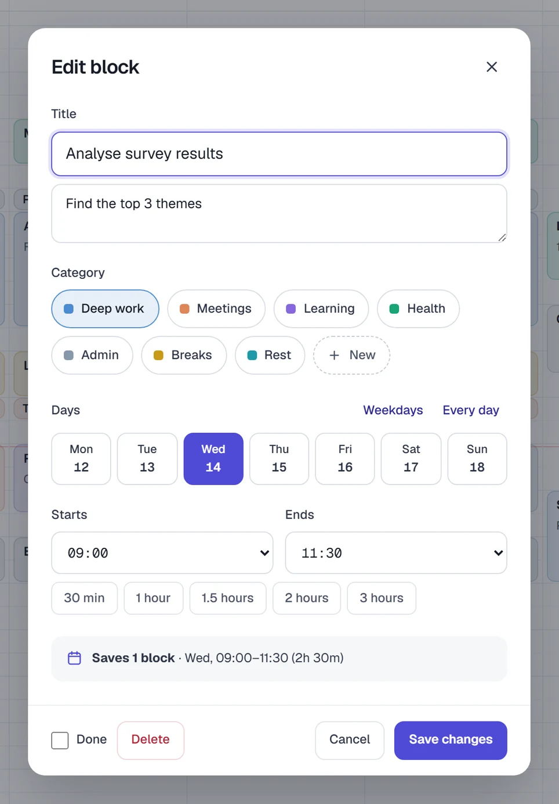
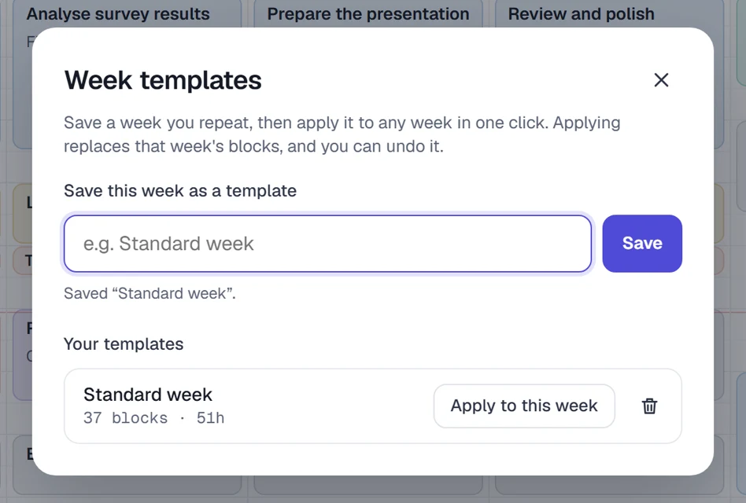
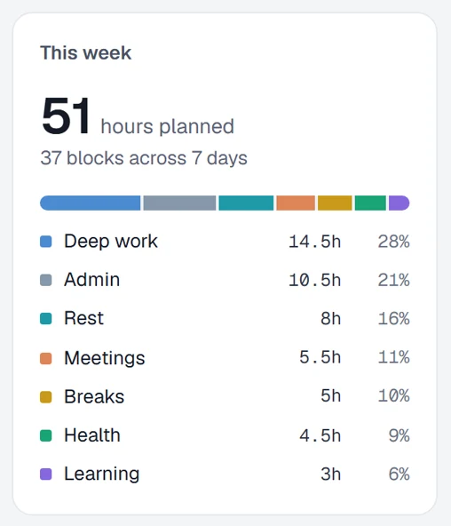

Give every hour a job.
Daymark is a weekly planner for time blocking. Drag across the hours to add a block, name it, and your week has a plan. It's free, there's no sign-up, and your plan stays in your browser.

Why I made it
I learned time blocking in a time management training and did it by hand every week, on paper. It worked. Then life got busy and I stopped. I built this to make the habit easier to come back to.
Mahmoudou Sidibe
How a week goes
- Sunday evening
Block the week
Click or drag on empty time to add a block. Give it a name and a category.
- During the week
Adjust as you go
Move blocks when plans change, resize them, and tick them off when they're done.
- Friday
Keep what worked
Copy the week to next week, or save it as a template to start from.
The one-minute tour
Up close



Also in there
- Undo
- Ctrl+Z undoes, Ctrl+Y redoes. Safe to experiment.
- Full day or compact
- All 24 hours, or just from your first block to your last.
- Print or PDF
- Put the week on the wall or send it to someone.
- On your phone
- Tap to edit. Press and hold a block to move it.
- Back up and restore
- Save your plan as a file and load it on another device.
- Right-click for quick actions
- Mark done, copy, change category or delete.
Questions
Is it free?
Yes. No cost, no account, no ads. It's open source under the MIT license.
Where is my plan saved?
Only in the browser you use it in, on your own device. Nothing is sent to me or anyone else. Use Back up in the planner now and then to save a copy as a file.
Should I use it online or download it?
Online is easiest and works on phones. Download the file to use it offline on your computer. The two keep separate plans, so pick one, or move between them with Back up and Restore.
Can I share it with my clients, team or students?
Yes, please do. Share the link, or download the file and change it to suit your group. The MIT license allows that, as long as the license note stays in the code.